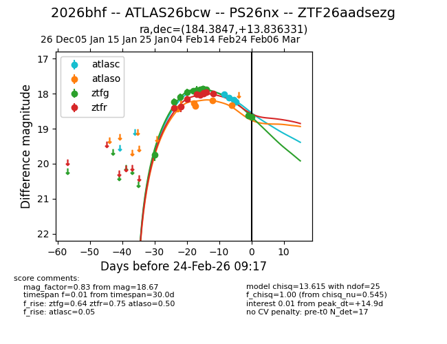
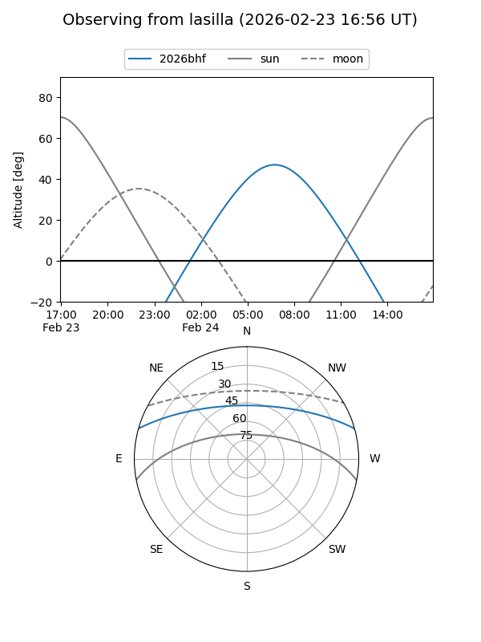
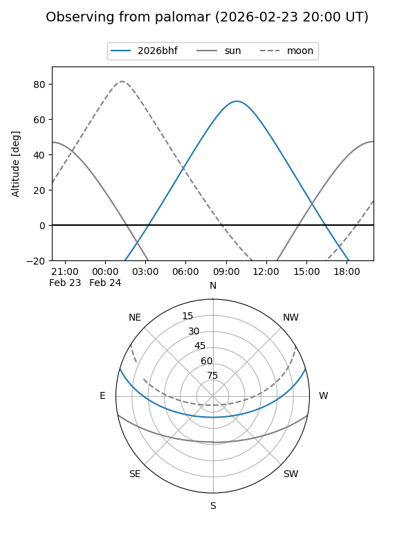
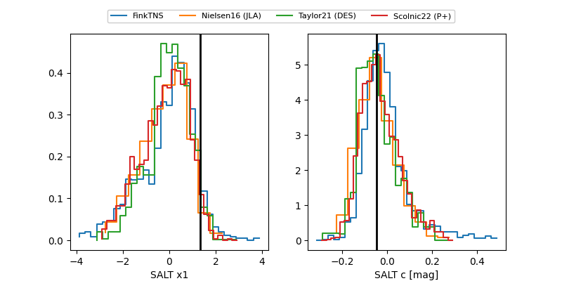

2026bhf
Target 2026bhf at 2026-02-24 09:18
Aliases and brokers:
FINK: link
Lasair: link
ALeRCE: link
TNS: link
YSE: link
alt names
ZTF26aadsezg (ztf,fink_ztf)
2026bhf (tns,yse)
ATLAS26bcw (atlas)
PS26nx (panstarrs)
Coordinates:
equatorial (ra, dec) = 184.3847,+13.83633
equatorial (HMS+DMS) = 12:17:32.34,+13:50:10.79
galactic (l, b) = (270.4851,+74.53112)
Flags:
Photometry:
last atlasc=18.23, atlaso=18.34, ztfg=18.67, ztfr=18.00
4 atlasc, 5 atlaso, 12 ztfg, 9 ztfr detections
Lightcurve

Visibility


Additional plots
